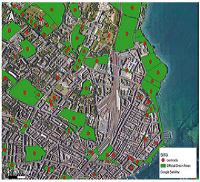
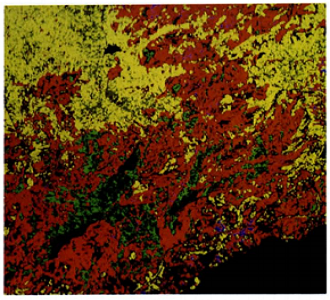
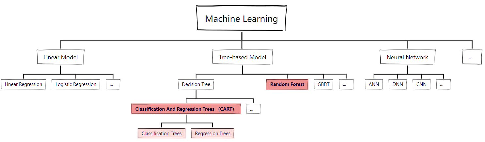
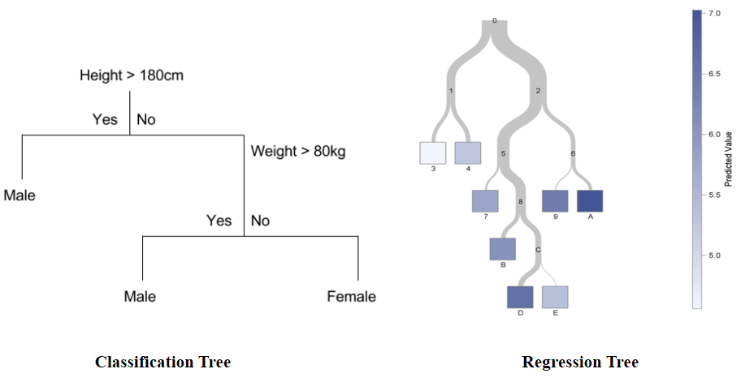
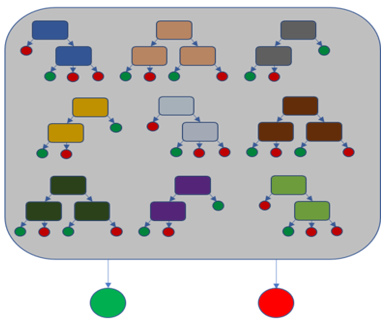
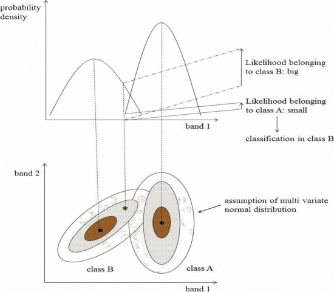
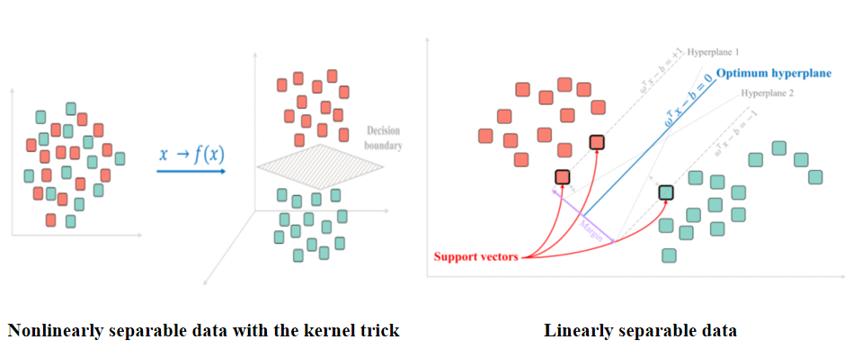

Classification
Summary
Remote sensing images usually contain a lot of information, such as vegetation, sea, buildings, etc. These different classifications of information appear more complex in urban areas. When using remote sensing data for research, it is common to use some classified information instead of all, which is called classified data. The land cover is one of the typical and popular classified data, which is useful for urban planning and Disaster detection. For example, using EO data to detect urban green area achieve the physical accessibility, which improves the efficiency of government monitoring urban expansion and land use (Giuliani et al., 2021). And in the most cited paper on forest fire, different types of vegetation are detected from Landsat image to identify the flammable trees and obtain a fire hazard map(Chuvieco and Congalton, 1989).


Sources: Giuliani et al., 2021; Chuvieco and Congalton, 1989
But how can we extract such information? This will involve machine learning, which is science of computer modeling of learning process.
Machine learning (ML) is based on data and it can help us make decisions or predictions without explicit programming, which also known as training. There are many models in machine learning, including the linear regression model that many people are familiar with and some complex models such as tree-based model and neural network. In remote sensing area, tree-based model is mainly used to identiy. image. Tree-based model uses different input variables to make complex decisions, of which classification and regression trees (CART) and random forest models are most commonly used.

Created by: Wendi Li
CART and random forest are both can predict large amounts of non-linear data, and neither requires pre-processing of dirty data (null values, outliers, etc.). The CART model includes classification tree and regression tree, which are used to classify data into several discrete categories and predict continuous dependent variable respectively. In classification tree, it uses Gini Impurity to split the data set to a decision tree, but in regression tree, the sum of squared residuals (SSR) is used. When decision tree is too deep and performing well in training data, overfitting occurs. Therefore, an optimized model called random forest is created to deal with more complex issues. Random forest consists of many decision trees, it uses bootstrapping to randomly draw N times from the data to get N samples (samples can be repeated) and determine the beat option.


Sources: Digital Vidya; WIDIMEDIA COMMONS
{kind=link}
So far, a new question will be raised: how do we apply the machine learning to imagery classification in remote sensing? This will refer to the supervised and unsupervised model and two typical application in remote sensing area.
Unsupervised classification does not have any prior information in the classification process and automatically classify data based on the distribution pattern of the spectral features. The methods of unsupervised classification includes K-means clustering, ISODATA algorithm etc., and DBSCAN in GIS is also a similar thing.
Supervised classification is an identification method based on known categories in the specific area, which commonly has better accuracy than unsupervised. And this kind of classification always includes the same process of class definition, pre-processing, training, pixel assignment and accuracy assessment. Here, we focus on two popularly used methods, Maximum Likelihood Classification(MLC) and Support Vector Machines(SVM). Maximum Likelihood takes the image and assigns pixel to the most probable type, which is based on probability that we set. SVM is a linear binary classifiers that assign a given test sample a class from one of the two possible labels, which determines an optimal hyperplane to divide the data set. However, data from different categories are impossibly always separable by linear relationship. Therefore, a model based on kernel trick was proposed by Cortes and Vapnik in 1995, which improved the availability.

